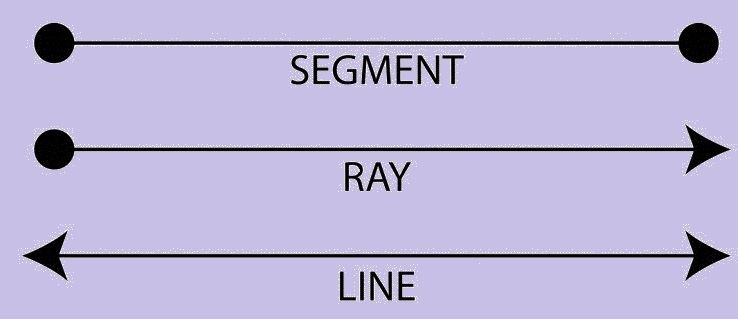
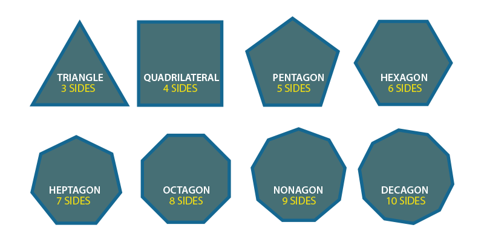
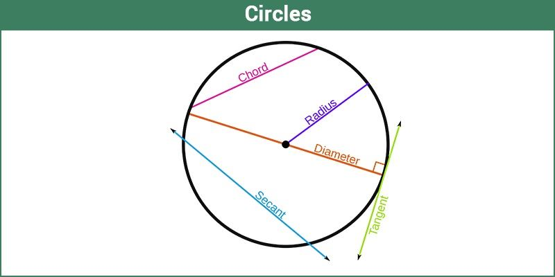

In a plane geometry, 2d shapes such as triangles, squares, rectangles, circles are also called flat shapes. In solid geometry, 3d shapes such as a cube, cuboid, cone, etc. are also called solids. The basic geometry is based on points, lines and planes explained in coordinate geometry.
The different types of shapes in geometry help us to understand the shapes day to day life. With the help of geometric concepts, we can calculate the area, perimeter and volume of shapes.
Table of Contents:
1. Definition 2. Branches 3. Plane Geometry 4. Points 5. Lines 6. Angle 7. Polygon 8. Circles
Geometry Definition
Geometry is the study of different types of shapes, figures and sizes in Maths or in real life. In geometry, we learn about different angles, transformations and similarities in the figures.
The basics of geometry depend on majorly point, line, angles and plane. All the geometrical shapes are based on these basic geometrical concepts.
Branches of Geometry
The branches of geometry are categorized as:
1. Algebraic geometry
2. Discrete geometry
3. Differential geometry
4. Euclidean geometry
5. Convex geometry
Algebaric Geometry
It is a branch of geometry studying zeros of the multivariate polynomial. It includes linear and polynomial algebraic equations that are used for solving the sets of zeros. The application of this type comprises Cryptography, string theory, etc.
Discrete Geometry
It is concerned with the relative position of simple geometric objects, such as points, lines, triangles, circles etc.
Differential Geometry
It uses techniques of algebra and calculus for problem-solving. The various problems include general relativity in physics etc.
Euclidean Geometry
The study of plane and solid figures based on axioms and theorems including points, lines, planes, angles, congruence, similarity, solid figures. It has a wide range of applications in Computer Science, Modern Mathematics problem solving, Crystallography etc.
Convex Geometry
It includes convex shapes in Euclidean space using techniques of real analysis. It has application in optimization and functional analysis in number theory.
Plane Geometry (Two-dimensional Geometry)
Plane Geometry deals with flat shapes which can be drawn on a piece of paper. These include lines, circles & triangles of two dimensions. Plane geometry is also known as two-dimensional geometry.
All the two-dimensional figures have only two measures such as length and breadth. It does not deal with the depth of the shapes. Some examples of plane figures are square, triangle, rectangle, circle, and so on.
The important terminologies in plane geometry are:
Point
Line
Angles
Point
A point is a precise location or place on a plane. A dot usually represents them. It is important to understand that a point is not a thing, but a place. Also, note that a point has no dimension; preferably, it has the only position.
Line
The line is straight (no curves), having no thickness and extends in both directions without end (infinitely). It is important to note that it is the combination of infinite points together to form a line. In geometry, we have a horizontal line and vertical line which are x-axis and y-axis respectively.

Line Segment – If a line has a starting and an endpoint then it is called a Line Segment.
Ray – If a line has a starting point and has no endpoint is called Ray. Eg.SunRays
Angles in Geometry
In planar geometry, an angle is the figure formed by two rays, called the sides of the angle, sharing a common endpoint, called the vertex of the angle.
Types of Angle
Acute Angle: – An Acute angle (or Sharp angle) is an angle smaller than a right angle ie. it can range between 0 – 90 degrees.
Obtuse Angle: – An Obtuse angle is more than 90 degrees but is less than 180 degrees.
Right Angle: – An angle of 90 degrees.
Straight Angle: – An angle of 180 degrees is a straight angle, i.e. the angle formed by a straight line

Polygons in Geometry
A plane figure that is bounded by a finite chain of straight line segments closing in a loop to form a closed polygonal chain or circuit.
The name ‘poly’ refers to multiple. An n-gon is a polygon with n sides; for example, a triangle is a 3-gon polygon.
General Formula for Sum of internal Angles of a polygon –
Sum of internal angles of a polygon = (n-2)*180
Types of Polygon
The types of polygons are:
Triangles Quadrilaterals Pentagon Hexagon Heptagon Octagon Nonagon Decagon

Cirlces
A Circle is a simple closed shape. From a certain point called the centre, all points of a circle are of same consistent distance, i.e. the curve traced out by a point that moves so that its distance from the centre is constant.

Similarity and Congruency in Geometry
Similarity– Two figures are said to be similar if they have the same shape or have an equal angle but do not have the same size.
Congruence– Two figures are said to be Congruent if they have the same shape and size. Thus, they are totally equal.